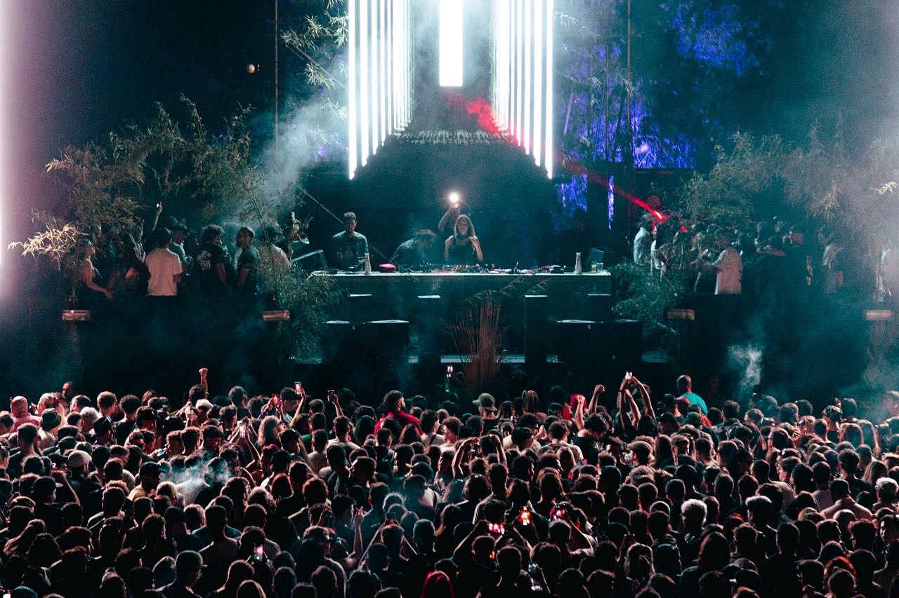
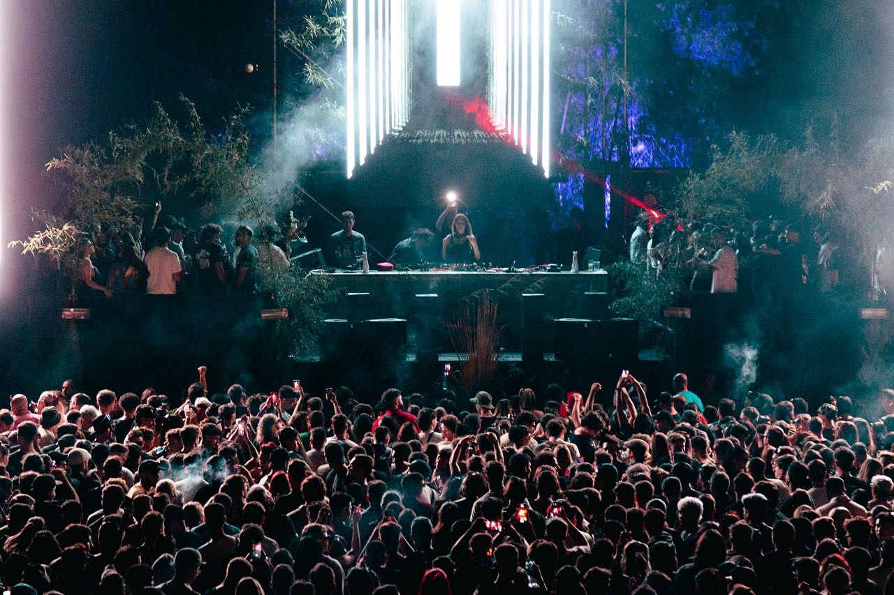

¿Quienes Somos?
El Atico Club es, como lo dice su nombre, un club de musica electronica fundado en el 2020, a pesar de su corta trayectoria, se introdujo rapidamente en el corazon de lxs amantes de la musica electronica de la ciudad de mendoza y tambien de todo el pais.
Por aqui han pasado grandes Djs tanto locales como nacionales e internacionales, tales como Deborah de luca, D-nox, Graziano Raffa, Myoos, Lovo, Juan Elvadin, entre otros. Actualmente, no solo produce dentro del club, sino que tambien fuera del mismo, realizando eventos y festivales de mas de 2500 personas.
Por aqui han pasado grandes Djs tanto locales como nacionales e internacionales, tales como Deborah de luca, D-nox, Graziano Raffa, Myoos, Lovo, Juan Elvadin, entre otros. Actualmente, no solo produce dentro del club, sino que tambien fuera del mismo, realizando eventos y festivales de mas de 2500 personas.
LA MUSICA ELECTRONICA NO SE ESCUCHA, SE VIVE, SE SIENTE


 
